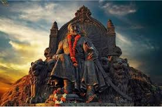

Shri. Chhatrapati Shivaji Maharaj
The King of Maratha Empire
Early Life
Shivaji was born in the hill-fort of Shivneri, near the city of Junnar, which is now in Pune district. Scholars disagree on his date of birth. The Government of Maharashtra lists 19 February as a holiday commemorating Shivaji's birth (Shivaji Jayanti). Shivaji was named after a local deity, the goddess Shivai Devi.Shivaji's father Shahaji Bhonsle was a Maratha general who served the Deccan Sultanates. His mother was Jijabai the daughter of Lakhuji Jadhavrao of Sindhkhed, a Mughal-aligned sardar claiming descent from a Yadav royal family of Devagiri.
Shivaji belonged to Maratha family of Bhonsle clan.[24] His paternal grandfather Maloji (1552–1597) was an influential general of Ahmadnagar Sultanate, and was awarded the epithet of "Raja". He was given deshmukhi rights of Pune, Supe, Chakan and Indapur for military expenses. He was also given Fort Shivneri for his family's residence (c. 1590).
At the time of Shivaji's birth, power in the Deccan was shared by three Islamic sultanates: Bijapur, Ahmednagar, and Golkonda. Shahaji often changed his loyalty between the Nizamshahi of Ahmadnagar, the Adilshah of Bijapur and the Mughals, but always kept his jagir (fiefdom) at Pune and his small army.
Issue
| Name | Mother | lifespan |
|---|---|---|
| Sakhubai Nimbalkar | Sai Bhosale | 1651-Unknown |
| Ranubai Jadhav | 1653-Unknown | |
| Ambikabai Mahadik | 1655-Unknown | |
| Sambhaji 1 | 14 May 1657 - 11 March 1689 | |
| Deepabai | Sai Soyarabai | Unknown |
| Rajaram 1 | 24 February 1670 - 3 march 1700 | |
| kamlabai | Sakvarbai | Unknown |
Governance
Ashta Pradhan Mandal
| Minister | Duty |
|---|---|
| Peshwa or Prime Minister | General Administration |
| Amatya or Finance Minister | Maintaining Public accounts |
| Mantri or Chronicler | Maintaining Court records |
| Summant or Dabir or Foreign Secretary | All matters related to relationships with other states |
| Sachiv or Shurn Nawis or Home Secretary | Managing correspondence of the king |
| Panditrao or Ecclesiastical Head | Religious matters |
| Nyayadhis or Chief Justice | Civil and Military justice |
| Senapati/Sari Naubat or Commander-in-Chief | All matters related to army of the king |
Death and Succession
Shivaji died around 3–5 April 1680 at the age of 50, on the eve of Hanuman Jayanti. The cause of Shivaji's death is disputed. British records states that Shivaji died of bloody flux being sick for 12 days. In a contemporary work in Portuguese, the Biblioteca Nacional de Lisboa, the recorded cause of death of Shivaji is anthrax. However, Krishnaji Anant Sabhasad, author of Sabhasad Bakhar, the biography of Shivaji has mentioned fever as the cause of death of Shivaji. Putalabai, the childless eldest of the surviving wives of Shivaji committed sati by jumping into his funeral pyre. Another surviving spouse, Sakwarbai, was not allowed to follow suit because she had a young daughter. There were also allegations, though doubted by later scholars, that his second wife Soyarabai had poisoned him in order to put her 10-year-old son Rajaram on the throne.
""Never bend your head, always hold it high.""
- Chhatrapati Shivaji Maharaj